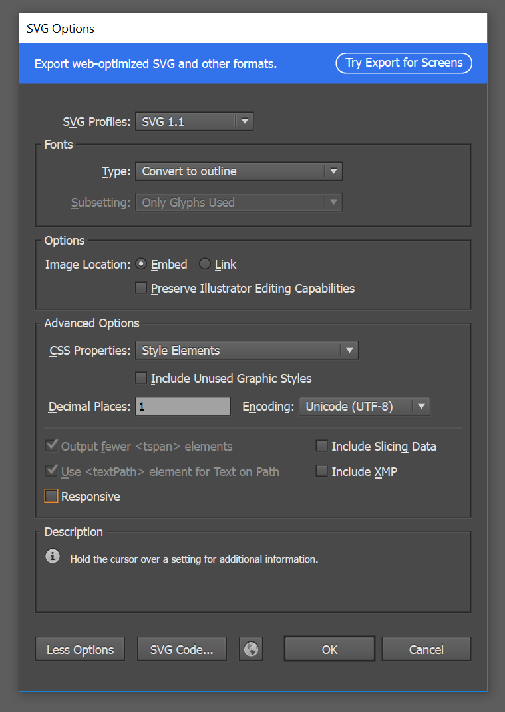

Font Awesome is fully open source and is GPL friendly. You can use it for commercial projects, open source projects, or really just about whatever you want.
Read The Licensesee "fyi_about-fonts" in this folder
on mac:
double click the OTF font
choose "install"
google how to do this on other platforms if you're not sure:
install font windows
install font linux
A vector SVG file is just an XML file
or other vector graphic software like inscape
font-awesome

NOT THIS
File > Export
you’ll se that you can output PNG, Flash, AutoCAD, TIFF, and Photoshop files, but not SVG files.
NOT THIS
File > Save for Web
you’ll notice that you can output PNG, GIF or JPEG files. No trace of SVG.
BUT THIS
File > Save As
exports SVG files from Illustrator
“Use Artboards”
option in the Save As dialog box.
If you have designed 10 symbols in your Illustrator file, you can use this option to easily create one artboard per symbol, and output 10 SVG files (one per symbol) in a single operation
Profile:
SVG 1.1
Fonts:
Convert to outline
Image location:
Embed
preserve illustrator editing capabilities NO
MORE OPTIONS / ADVANCED OPTIONS
CSS Properties:
Style Elements
Decimal Places: 1
If they are selectable:
Output fewer <tspan> elements YES
Use <textPath> element for Text on Path YES
Reponsive NO
the version recommended by the W3C.
SVG Tiny was created a long time ago to support the first generation of mobile devices such as Blackberry phones and PDAs. Today, it doesn’t make sense to export SVG Tiny files if you target smartphones.
This will turn all of your fonts into SVG drawings. This is what we want.
If you'd chosen "SVG" then you would be creating an SVG file with SVG fonts included. This leads to the font characters being embedded in your SVG file, and this is more complicated SVG code. You can choose "SVG" and then choose the subsetting "only glyphs used" and only the fonts (glyphs) you want will be embedded.
For complex fonts like handwriting fonts or splattery fonts which would result in a lot of SVG code to draw them out, choosing "SVG / only glyphs used" will result in a smaller file and is a good option.
Only choose "only glyphs used" if you don’t plan to dynamically change the text content of your SVG which, if you're doing that, you probably know a whole lot about SVG already.
If you have bitmap images as part of your SVG file (included in your SVG file), then you can either link to those bitmap images or include the images in the SVG file as base64 encoded data. Font-awesome icons don't have bitmaps in them so it doesn't really matter what we choose here.
*IF* inside illustrator you have created layers and "graphic styles" and then applied those "graphic styles" to layers, illustrator will export the SVG with CSS already in it styling the drawings in your SVG with appropriate CSS.
This determines how many decimal places are used to store x,y coordinates in your drawing. 1 decimal point keeps your SVG file more readable and smaller in size.

See this article for information
Setting this to "no" will include the width and height attributes in the SVG tag.